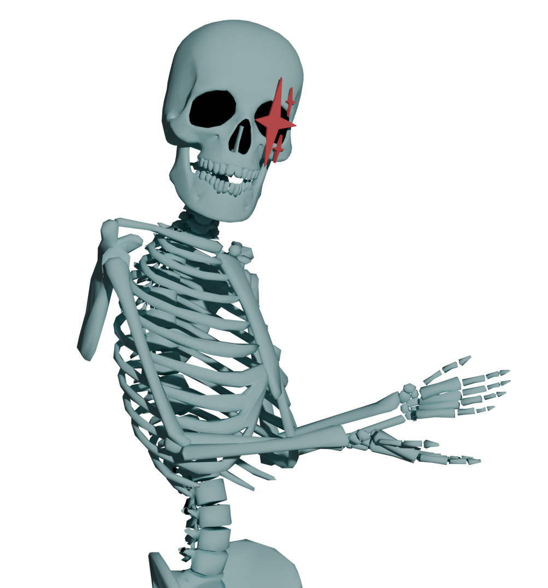

Research-grade markerless motion capture software that's completely free and open source.
Built for researchers, animators, athletes, and creators worldwide.
Position two or more standard webcams, GoPros, or smartphones around your space. Our universal design ensures high-quality results using everyday devices, requiring no expensive or specialized motion capture hardware.
Wave a printed Charuco board within view of all cameras. This process automatically synchronizes the feeds and defines the 3D coordinate system required for accurate spatial reconstruction and tracking.
Perform your movements naturally while recording synchronized footage directly through the FreeMoCap interface, or simply record offline on your mobile devices to import the video files for later processing.
The local processing engine transforms video into 3D data. Access your results in multiple formats, including CSV for analysis or FBX and .blend files among others for professional animation and research pipelines.
Capture full-body 3D movement using advanced computer vision algorithms without physical markers.
No subscriptions, no licenses, no hidden fees. FreeMoCap is and will always be 100% free and open source.
Built on cutting-edge computer vision and machine learning technologies used in academic research.
Designed to run on CPU to be used by everyone from professional researchers to beginners with no technical training.
Full transparency and community-driven development. Contribute, modify, and extend to fit your needs.
Your video data never leaves your machine. All processing happens locally, ensuring total privacy for your sensitive research data.
The Free Motion Capture Project (FreeMoCap) aims to provide research-grade markerless motion capture software to everyone for free.
We're building a user-friendly framework that connects cutting-edge open-source tools from the computer vision and machine learning communities to accurately record full-body 3D movement of humans, animals, robots, and other objects.
Following a "Universal Design" philosophy, we create systems that serve professional researchers while remaining intuitive to beginners with no technical training.
Everyone has a reason to record human movement.
We want to help them do it.

Knowledge is free. Labor is expensive.
FreeMoCap is built on the belief that anything that can be infinitely and losslessly duplicated—code, documentation, videos—should be available to everyone, for free.
When you need hands-on help, dedicated support, or custom solutions, our team offers professional services to help you get up and running faster and with confidence.
Let us help you get on your two feet.
Or four, if it’s rodents.
Watch in-depth tutorials, technical demos, and regular dev-streams on YouTube and Twitch.
Follow us on social media for the latest updates and announcements.